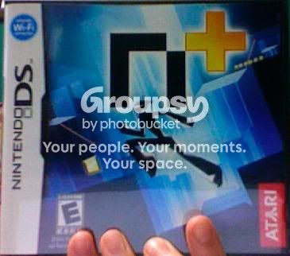

The only problem I've fond in the game is the bounce blocks, but most of your complaints are pretty nitpicky.
I have the DS version btw
1. Of course the graphics aren't as good, the hardware on the PC is like 100 times more powerful. But both pure and plus are good.
2. To play multiplayer, go into settings and set up a wifi connection, then go to multiplayer and hit join game. There's Co-op, domination,blitz, and tag. thats right, TAG!!!
3. You get to play the map pack when you beat the first 35 episodes. All the other map packs are for the multiplayer levels, so yeah.
4. That level isn't that hard. Just use momentum and jump from the slant. (see PC version 88-1,
http://www.youtube.com/watch?v=LX1ty_eN4Eg)
Yeah, this game is really great and your complaints kinda suck. Real complaints would be the bounce blocks are bad, you can't twist doors and and one-way platforms in the level-editor, and the DS doesn't support WPA security (but that isn't the games fault).
On the plus side (ahahahahahaha), the game controls and looks extremely good and polished. As someone who has almost beat N (fuck 88-4), the levels are at a good difficulty, the multiplayer is awesome, and the level editor has some cool new features (like timed mines and water), getting the colors is fun, and the two screens works suprisingly well.
Just my 2 cents.

EDIT: Also, I've beaten the game, for what it's worth.
 Is this possible?
Is this possible?